⏱ 15 min
Petit épeautre
Céréale ancienne au goût subtil de noisette, idéale en risotto ou en salade tiède.
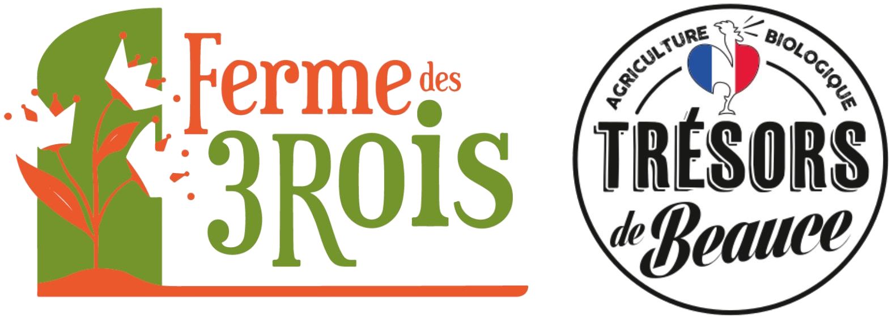
Cultivés puis conditionnés sur notre exploitation du Puiset, nos produits bio « 100% Origine Beauce » s'invitent aussi bien dans les cuisines professionnelles que familiales. Disponibles en sachet 400g, en sac de 1 à 5kg, en bocal, ou en vrac 10kg pour les professionnels.
Céréale ancienne au goût subtil de noisette, idéale en risotto ou en salade tiède.
Riche et rustique, parfait en accompagnement ou en soupe paysanne.
Riche en protéines, cuisson rapide, pour salades et bols gourmands.
Blé concassé à la cuisson express, base idéale du taboulé maison.
À éclater en casserole ou au micro-ondes, pour un apéro 100% naturel.
Haricots
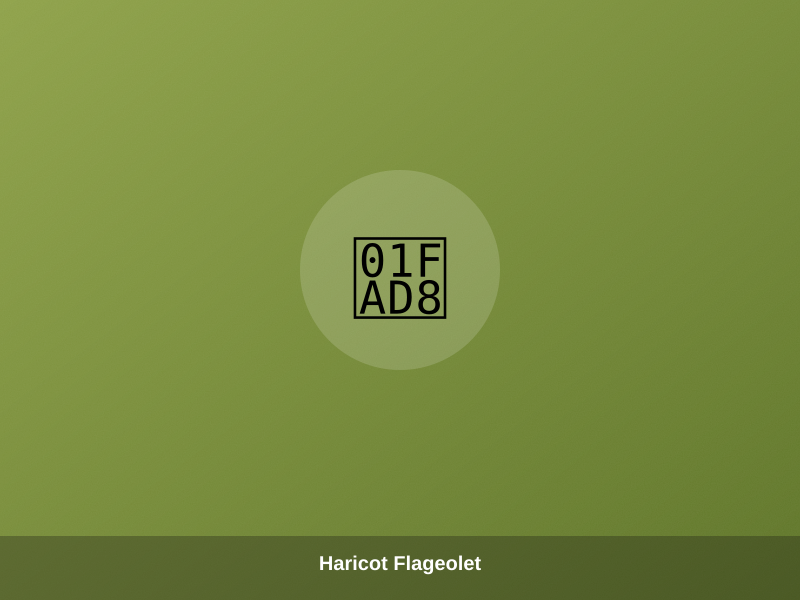
⏱ 30 minFin et fondant, le classique du gigot d'agneau.
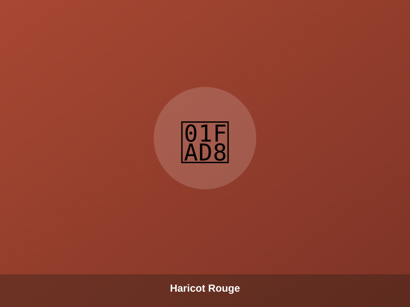
⏱ 30 minCharnu et généreux, parfait en chili ou en salade composée.
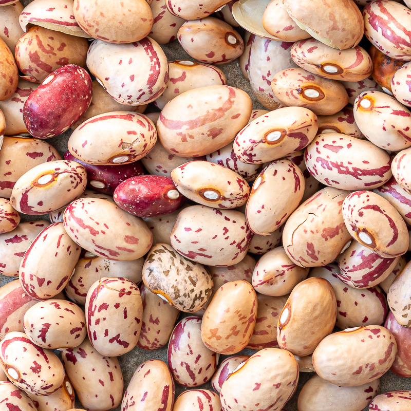
⏱ 30 minVariété rustique à la texture fondante, façon fagioli italien.
Petit haricot blanc tendre, idéal en cassoulet.
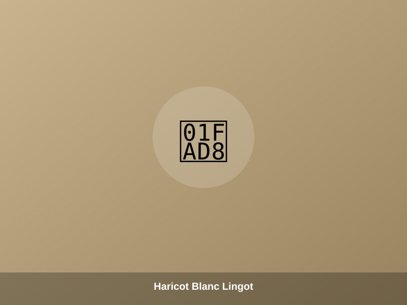
⏱ 30 minLe grand classique des plats mijotés du dimanche.
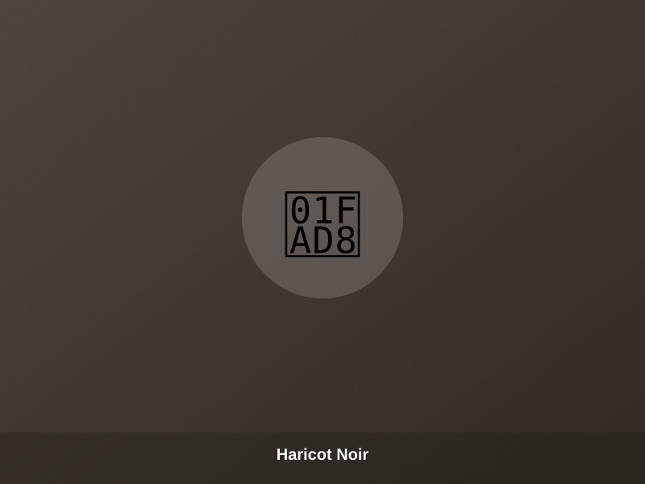
⏱ 30 minTexture crémeuse, parfait pour les cuisines du monde.
Lentilles
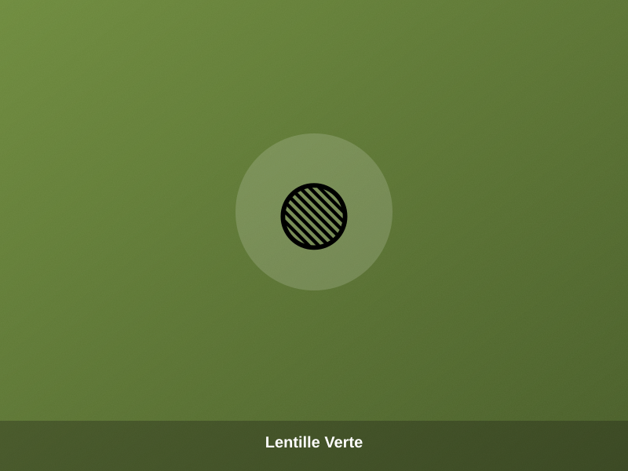
⏱ 20 minStyle « Le Puy », ferme sous la dent, riche en fibres.
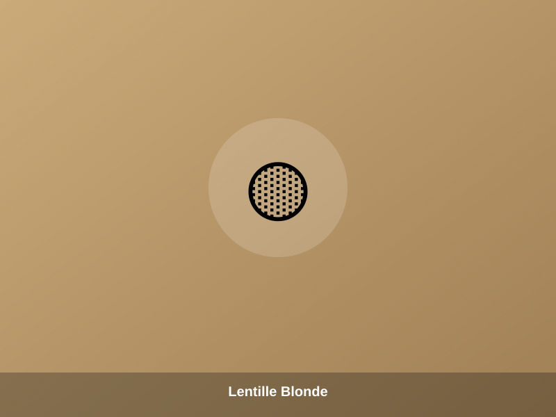
⏱ 15-30 minDouce et fondante, pour des plats tout en délicatesse.
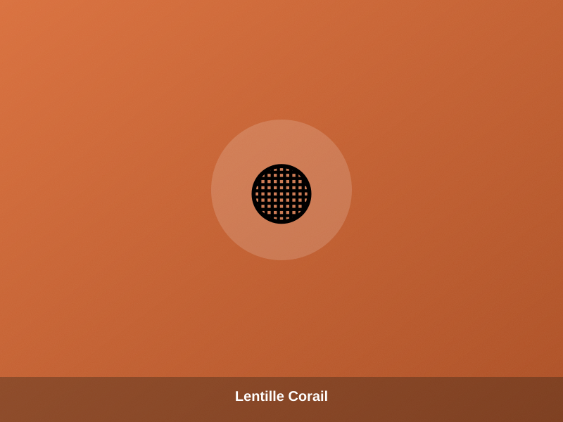
⏱ 5-10 minCuisson minute, se délite pour dahls et veloutés.
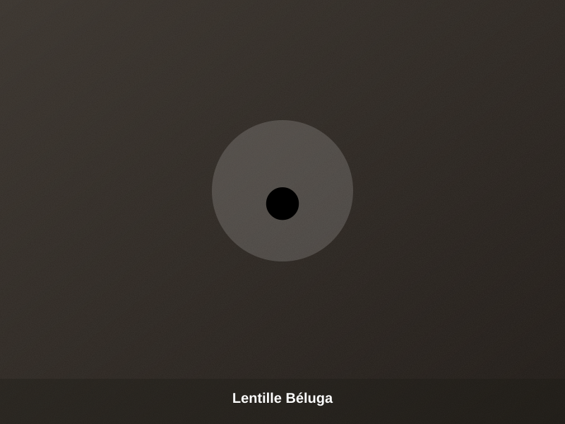
⏱ 20 minPetite et noire, un caviar végétal pour vos salades chics.
Pois
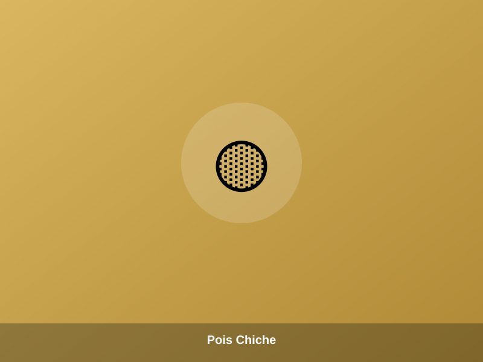
⏱ 30 minPour houmous, couscous ou simplement « au naturel » en bocal.
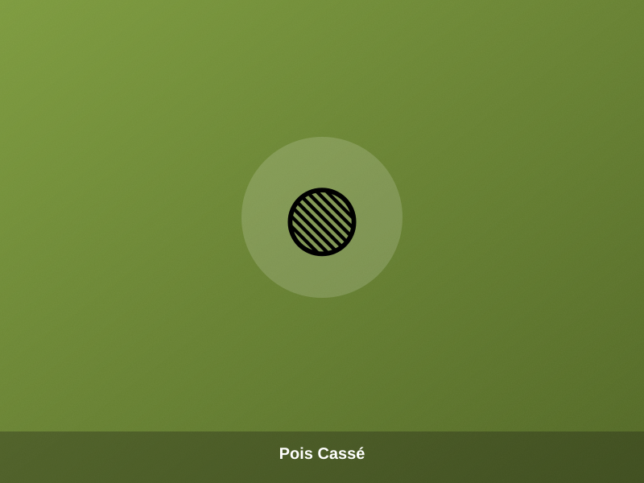
⏱ 30-60 minLe secret des purées et soupes réconfortantes d'hiver.
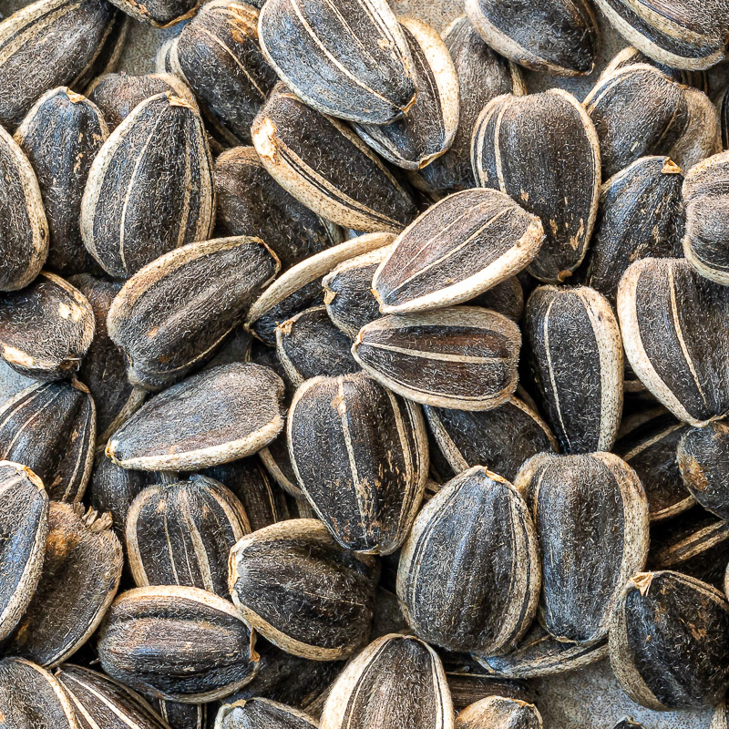
Nature, salé ou torréfié au piment d'Espelette — croquant à l'apéro comme en topping.
À saupoudrer sur salades, yaourts ou porridges pour un boost d'oméga-3.
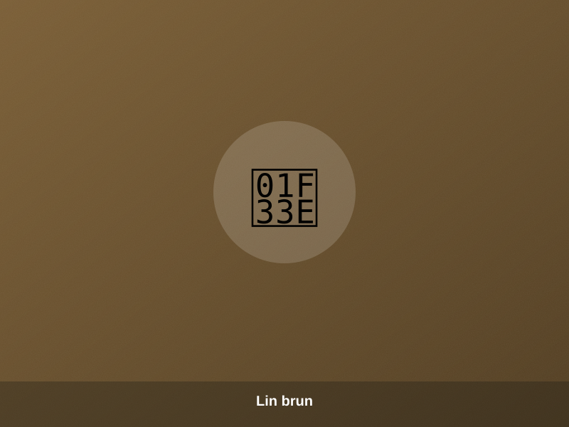
Saveur plus prononcée, parfaite en pain maison.
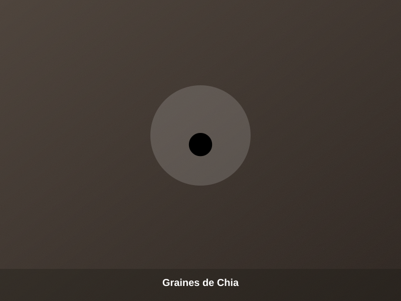
La star des puddings et des petits-déjeuners healthy.
Aux côtés de nos légumes secs, nous cultivons des légumes de plein champ en agriculture biologique, disponibles selon la saison.
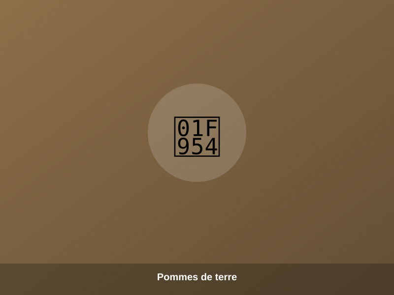
Cultivées sur nos terres beauceronnes, disponibles à l'automne et en hiver.
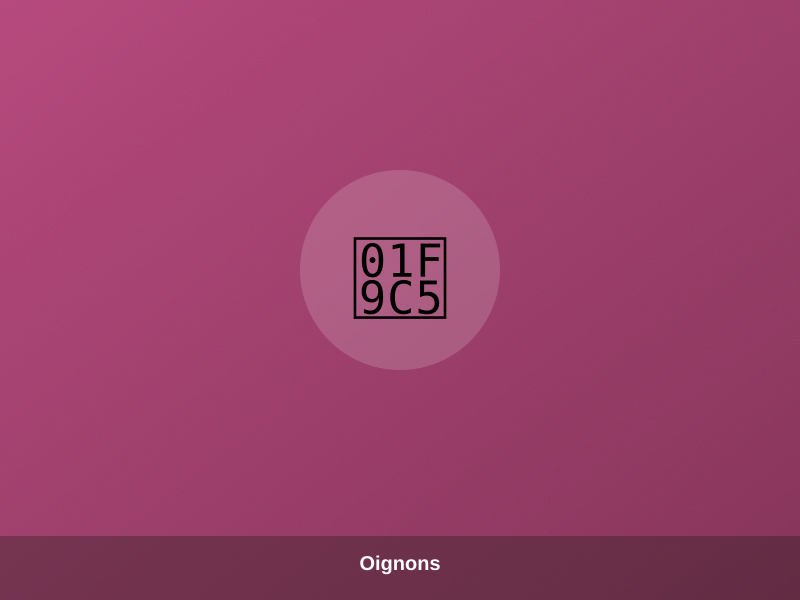
Doux et parfumés, récoltés en fin d'été.
Variétés de saison, idéales pour les veloutés d'automne.
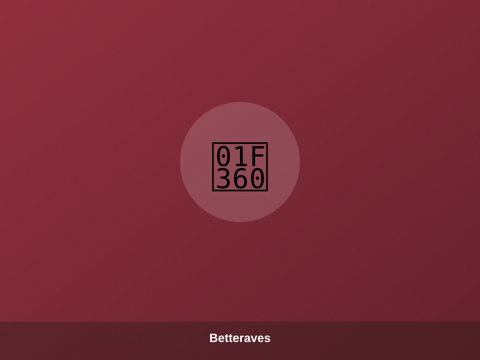
Crues, cuites ou en jus, un légume racine plein de caractère.
Particuliers, boutiques ou professionnels : notre équipe familiale vous répond sous 48h.